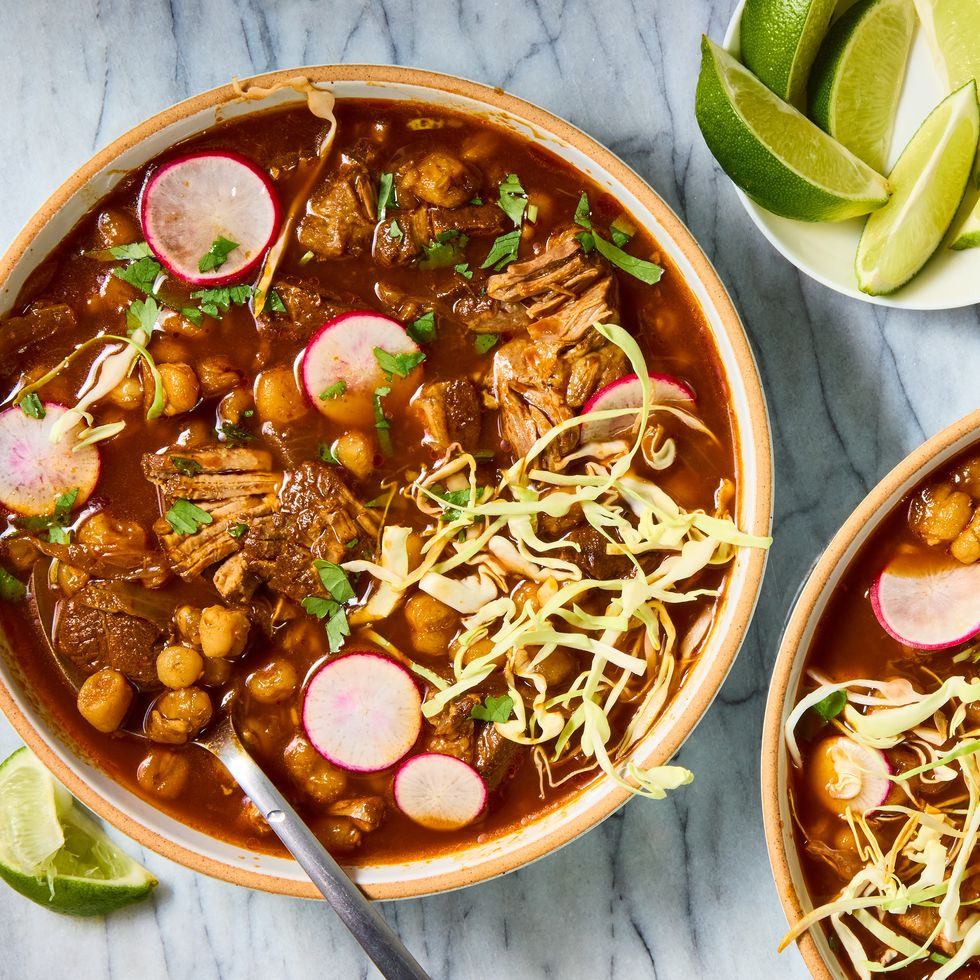

Pozole

To elevate the warmth of your evening, indulge in the savory delight of
our 🍲 Pozole a soul-soothing masterpiece that will leave
you longing for more.
Ingredients
- 3 lb. pork shoulder, cut into 2" pieces
- Kosher salt
- Freshly ground black pepper
- 1 large yellow onion, quartered
- 3 cloves garlic, sliced
- 4 c. low-sodium chicken broth
- 1 tsp. cumin seeds
- 1 bay leaf
- 2 dried ancho chiles, stem and seeds removed
- 2 dried chiles de árbol, stem and seeds removed
- 2 dried guajillo chiles, stem and seeds removed
- 3 (15-oz.) cans hominy, drained, rinsed
-
Thinly sliced radishes, thinly sliced green cabbage, and chopped fresh
cilantro, for serving
Directions
-
In a large bowl, season pork with salt and pepper. In a large pot over
medium heat, combine pork, onion, garlic, broth, cloves, cumin seeds,
and bay leaf. Add enough water to cover pork by 2". Bring to a boil,
then cover, reduce heat to medium-low, and bring to a simmer. Cook,
skimming foam off top as needed, 1 hour 30 minutes.
-
Meanwhile, in a medium heatproof bowl, soak chiles in 2 cups boiling
water for 30 minutes.
-
Transfer chiles and about 1/2 cup soaking liquid to a blender. Blend
until smooth, adding more water as needed.
-
Add chile puree and hominy to pot with pork. Cover and continue to
simmer, stirring occasionally, until pork is very tender, about 1 hour
30 minutes more; season with salt and pepper.
- Top pozole with radishes, cabbage, and cilantro.
- Enjoy
Home